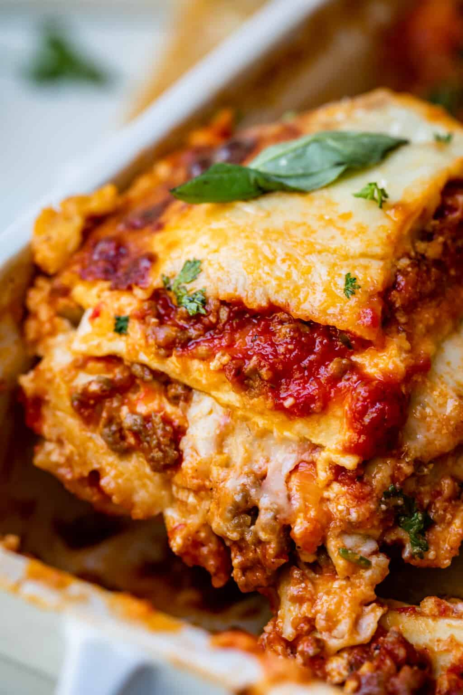

Lasagna

Description
Lasagna is a classic Italian dish that layers flat, wide pasta with a rich filling typically consisting of ragù (a meat sauce), béchamel (a white sauce), and cheese, though there are countless variations including vegetarian options. The meat sauce is usually made from ground beef, pork, or a combination thereof, simmered with tomatoes, garlic, onions, and herbs for a flavorful base. The béchamel sauce, made from butter, flour, and milk, adds a creamy, velvety layer that contrasts with the hearty meat sauce. Layers of pasta are alternately spread with the sauces and often sprinkled with grated cheese, such as Parmesan or mozzarella, which melts into a bubbly, golden crust when baked. The lasagna is assembled in a deep baking dish and oven-baked until the pasta is tender and the flavors meld together, resulting in a comforting, indulgent dish that's perfect for feeding a crowd or enjoying as leftovers, as the flavors continue to develop and improve.
- Lasagna noodles
- Ground beef
- Ground pork
- Onion, finely chopped
- Garlic cloves, minced
- Tomato sauce
- Tomato paste
- Crushed tomatoes
- Water
- Sugar
- Fresh basil leaves, chopped
- Fennel seeds
- Italian seasoning
- Salt
- Ground black pepper
- Fresh parsley, chopped
- Ricotta cheese
- Egg
- Mozzarella cheese, sliced or shredded
- Parmesan cheese, grated
- Butter
- Flour
- Milk (for béchamel sauce)
Steps
- Preheat your oven to the temperature specified in your recipe (commonly 375°F or 190°C).
- Boil the lasagna noodles in salted water until al dente, then drain and set aside.
- In a large skillet, cook the ground beef, ground pork, onion, and garlic over medium heat until the meat is browned and the onion is tender. Drain any excess fat.
- Add tomato sauce, tomato paste, crushed tomatoes, water, sugar, basil, fennel seeds, Italian seasoning, salt, and pepper to the skillet. Simmer, uncovered, for about 45 minutes, stirring occasionally.
- In a mixing bowl, combine ricotta cheese, egg, and additional parsley. Mix well.
- To make the béchamel sauce, melt butter over medium heat in a separate saucepan. Stir in flour to form a roux, cooking for a minute. Gradually whisk in milk until the sauce is smooth and thickened. Season with salt and pepper.
- To assemble the lasagna, spread a thin layer of meat sauce in the bottom of a baking dish. Arrange a layer of cooked noodles over the sauce. Spread with one third of the ricotta cheese mixture. Top with a layer of béchamel sauce, then a layer of mozzarella cheese, and sprinkle with Parmesan cheese. Repeat the layers, ending with a layer of meat sauce and a final topping of cheeses.
- Cover the baking dish with aluminum foil, making sure it does not touch the cheese.
- Bake in the preheated oven for 25 minutes. Remove foil, and bake an additional 25 minutes to allow cheese to brown and sauce to bubble.
- Let stand for 10 minutes before serving to allow the lasagna to set and make it easier to cut.
Odin recipes